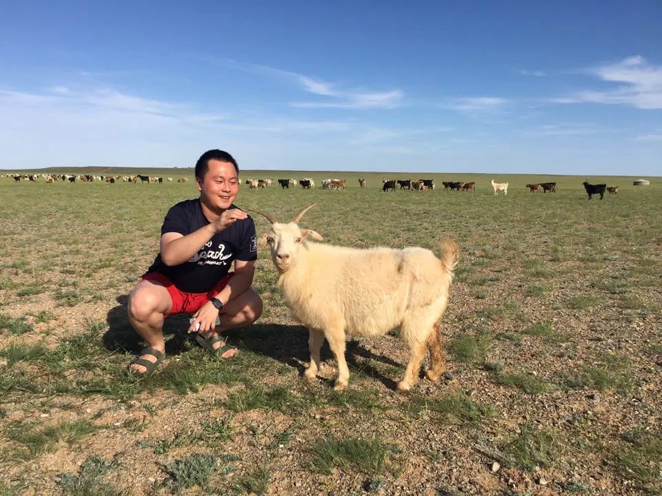

한국채권투자운용 · 디지털금융 MBA
안녕하세요, 박찬휘입니다.
달리고, 페달을 밟고, 떠나는 사람.
클라우드 위에 처음 올려 보는 저의 지도입니다.
- 0나라
- 0도시·지역
- 0사진·영상
- –기록
01소개

한국채권투자운용에서 근무하며 디지털금융 MBA 과정에 재학 중인 박찬휘입니다.
인사말 이번 클라우드 컴퓨팅 수업을 통해 이런 홈페이지를 만들어 보는 것은 처음이라 아직은 낯설고 서툽니다. 그래도 하나씩 배우며 직접 만들어 가고 있으니, 잘 부탁드립니다!
- 이름
- 박찬휘
- 생년월일
- 1992.01.22
- 혈액형 · MBTI
- AB형 · ISFP
- 직장
- 한국채권투자운용
- 과정
- 디지털금융 MBA
02나의 지도
핀을 눌러 그곳의 사진과 영상을 열어 보세요. 아니면 여정을 처음부터 재생해 볼 수도 있어요.
핀을 눌러 보세요